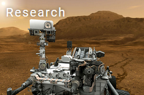
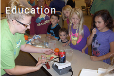
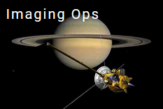

S S I
The Space Science Institute is shaping our future by enabling scientists to advance our understanding of Earth and the Universe; increasing science and technology literacy for people of all ages and backgrounds; and inspiring youth to pursue science-technology education and career opportunities.

SSI is home to more than 40 scientists carrying out cutting edge research in astrophysics, planetary science, and space physics.

SSI is a leader in translating science into nationwide STEM education and outreach projects.

SSI is home to the Cassini Imaging Science Subsystem ops team, which provides the best pictures of Saturn, its rings, and moons.